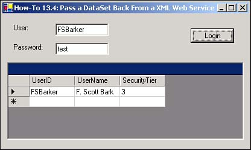

13.4 Pass a Dataset Back from an XML Web Service
I want to be able to get more data than just a single value. How do I retrieve a whole dataset from a Web Service?
Technique
When you need to pass back a record or multiple records from a Web Service, you have to pass it back as a DataSet object, rather than a DataTable object.
For this How-To, you will pass back the record of the user who is requested. Before returning the record, however, the code removes the Password column. You don't particularly want that information going out over the Net(see Listing 13.4).
Listing 13.4 SecurityServices.asmx.vb: Passing Back a DataSet Object
<WebMethod()> Public Function GetUserInfo(ByVal strUserID As String) As DataSet
Dim ocnn As New OleDb.OleDbConnection("Provider=Microsoft.Jet.OLEDB.4.0;" &
_
"Data
Source=E:\InetPub\wwwroot\SecurityWebService\WebServiceSecurity.MDB")
Dim odaUsers As New _
OleDb.OleDbDataAdapter("Select * from tblUsers Where UserID = '" &
strUserID & "'", ocnn)
Dim dsUsers As New DataSet()
odaUsers.Fill(dsUsers)
'-- remove the password column
dsUsers.Tables(0).Columns.Remove("Password")
Return dsUsers
End Function
Note
 |
Although you could limit the SELECT string to only return the necessary columns, and not have to delete the Password column, there are two reasons for coding it the way it was done. 1. It shows how to delete columns from a data table. 2. If the goal is to include all the columns in the table and accept the Password column, then when other columns are added, you will not have to touch the code because the * is being used.
|
Tip
 |
When referring to tables on the receiving end, as displayed in step 2 of this How-To, you have to refer to tables in the dataset by their ordinal values. Therefore, some information in the description of the Web Service method about the dataset might be warranted.
|
Steps
To preview this How-To, open the solution called Visual Basic .NET-Chapter 13, found in this chapter's folder. On the main form, click on the button labeled How-To 13.4. The form for How-To 13.4 then opens. If you type FSBarker for the User and Test for the Password, you can see the user's information listed in the DataGrid object (see Figure 13.14). Otherwise, a message box appears saying that you cannot see the data.
Open the SecurityWebServices Web Service project you created in How-To 13.2. Add the code from Listing 13.4 in the "Technique" section to create the GetUserInfo method. Test the new Web method. When you do so, you will see some XML, as shown here in Listing 13.5.
Listing 13.5 Dataset Sent Back as XML
<?xml version="1.0" encoding="utf-8" ?>
- <DataSet xmlns="http://appsplus.com/webservices/">
- <xs:schema id="NewDataSet" xmlns=""
xmlns:xs="http://www.w3.org/2001/XMLSchema"
xmlns:msdata="urn:schemas-microsoft-com:xml-msdata">
- <xs:element name="NewDataSet" msdata:IsDataSet="true">
- <xs:complexType>
- <xs:choice maxOccurs="unbounded">
- <xs:element name="Table">
- <xs:complexType>
- <xs:sequence>
<xs:element name="UserID" type="xs:string" minOccurs="0" />
<xs:element name="UserName" type="xs:string" minOccurs="0" />
<xs:element name="SecurityTier" type="xs:string" minOccurs="0" />
</xs:sequence>
</xs:complexType>
</xs:element>
</xs:choice>
</xs:complexType>
</xs:element>
</xs:schema>
- <diffgr:diffgram
xmlns:msdata="urn:schemas-microsoft-com:xml-msdata"
xmlns:diffgr="urn:schemas-microsoft-com:xml-diffgram-v1">
- <NewDataSet xmlns="">
- <Table diffgr:id="Table1" msdata:rowOrder="0">
<UserID>FSBarker</UserID>
<UserName>F. Scott Barker</UserName>
<SecurityTier>3</SecurityTier>
</Table>
</NewDataSet>
</diffgr:diffgram>
</DataSet>
Open the Windows Project where you created the Login windows Form. Create a new Windows Form and place the controls shown in Table 13.2 in the order displayed in Figure 13.14.
Table 13.2. Label, TextBox, DataGrid, and Command Button Control Property Settings
|
Label
|
Text
|
User
|
|
TextBox
|
Name
|
txtUser
|
|
Label
|
Text
|
Password
|
|
TextBox
|
Name
|
txtPassword
|
|
DataGrid
|
Name
|
dgUserInfo
|
|
Button
|
Name
|
btnLogin
|
Add the code in Listing 13.6 to the Click event of btnLogin. This code once again checks the username and password by calling the TestUserMethod of the Web Service. If the username and password check out, then the GetUserInfo method is called, passing the username once again. The first table from the returned dataset is assigned to the DataSource property of dgUsers.
Listing 13.6 frmHowTo13_4.vb: Retrieving a Dataset from a Web Service
Private Sub btnLogin_Click(ByVal sender As System.Object,
ByVal e As System.EventArgs) Handles btnLogin.Click
Dim wsSec As localhost.SecurityServices
wsSec = New localhost.SecurityServices()
If wsSec.TestUserPassword(Me.txtUser.Text, Me.txtPassword.Text) Then
dgUserInfo.DataSource = wsSec.GetUserInfo(Me.txtUser.Text).Tables(0)
Else
MessageBox.Show("No information may be presented.")
End If
End Sub

Comments
You can use Web Services in literally thousands of ways. This chapter just covers a couple, but it should be enough to start you down the path of using them productively.